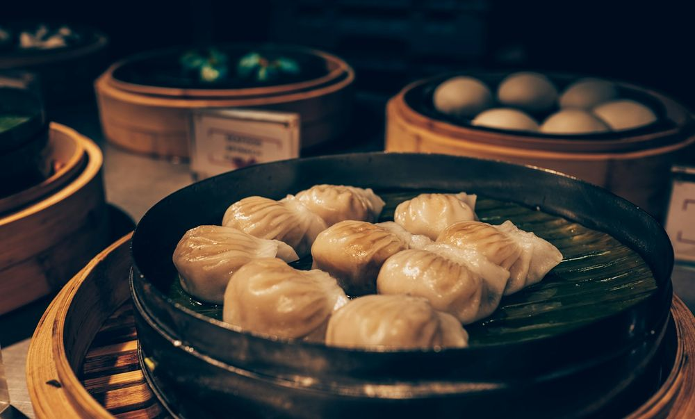
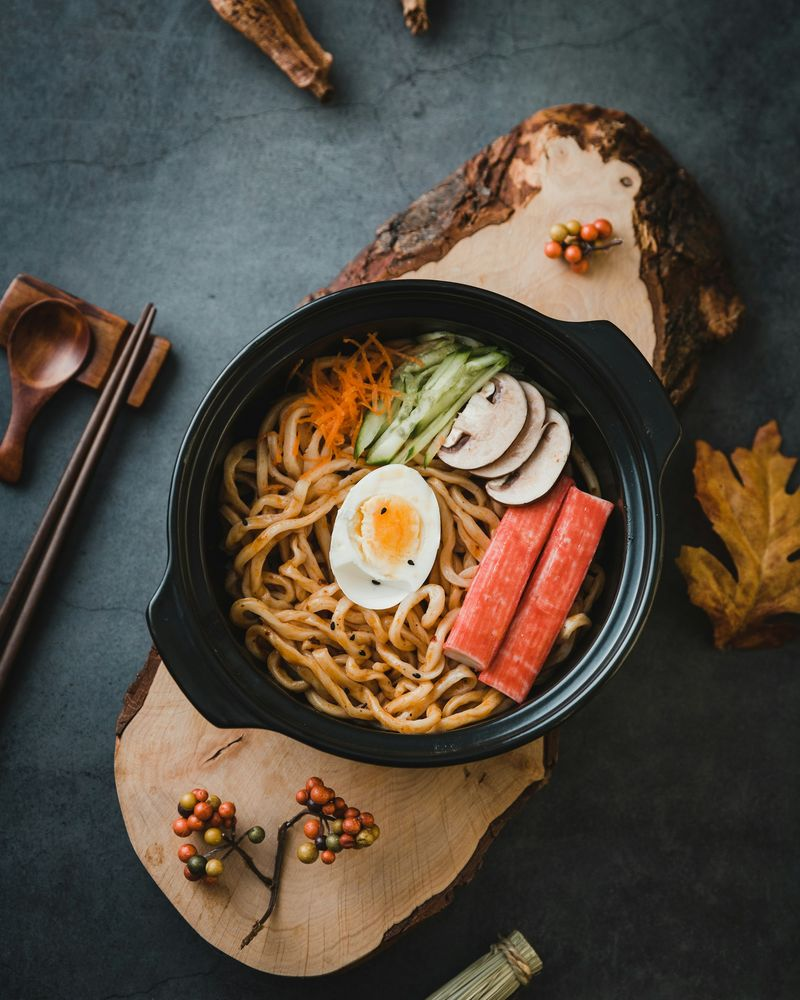
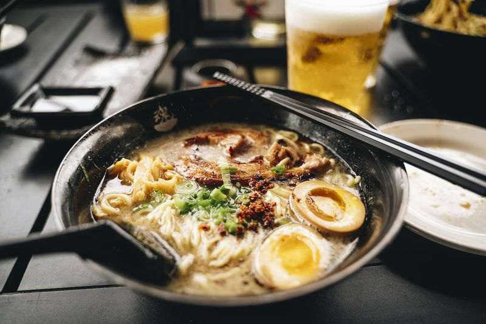
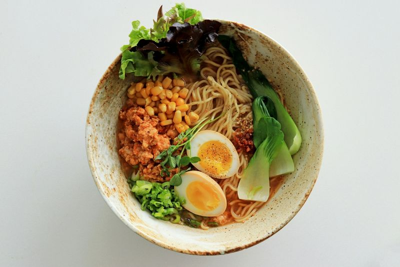
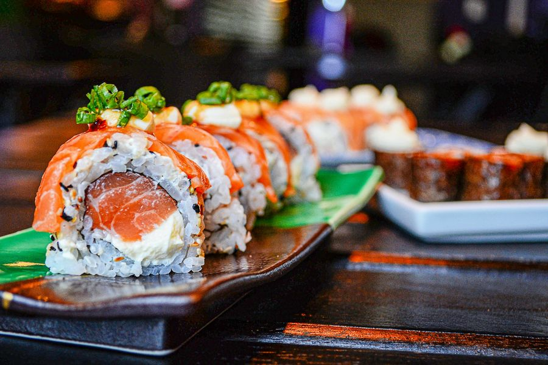
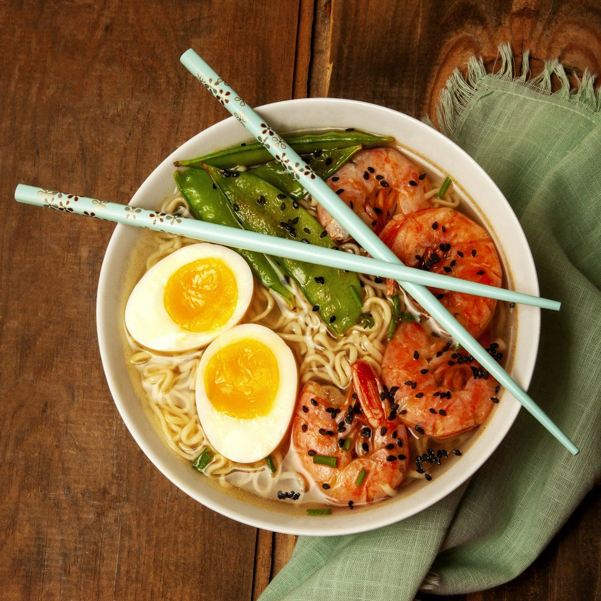

Petiscos para dividir
Gyoza, karaage e outros pratos de izakaya para acompanhar uma cerveja gelada e esticar a conversa.
Ver petiscosCaldo cozido por horas, macarrão fresco e coberturas na medida certa. Uma tigela quente, pensada para quem gosta de saborear cada colherada.

Na Akai, o ramen é feito com calma: o caldo é cozido lentamente, o tempero é equilibrado e o macarrão chega à mesa no ponto certo.
Cada receita traz um jeito de saborear a cozinha japonesa de casas de ramen, com a atmosfera descontraída de uma ramen-ya.
Conheça o cardápio


Uma seleção de ramen, petiscos de izakaya e sobremesas para dividir à mesa.

Gyoza, karaage e outros pratos de izakaya para acompanhar uma cerveja gelada e esticar a conversa.
Ver petiscos
Cortes frescos e arroz no ponto, em um combinado para dividir ou pedir individual.
Ver sushiUm caldo profundo, macarrão com mordida e coberturas frescas. A nossa especialidade em uma única tigela.
Peça a sua
Do gyoza ao mochi, tudo para uma refeição completa, num ambiente acolhedor e descontraído.
Reservar mesaAkai Ramen-ya
Liberdade, São Paulo